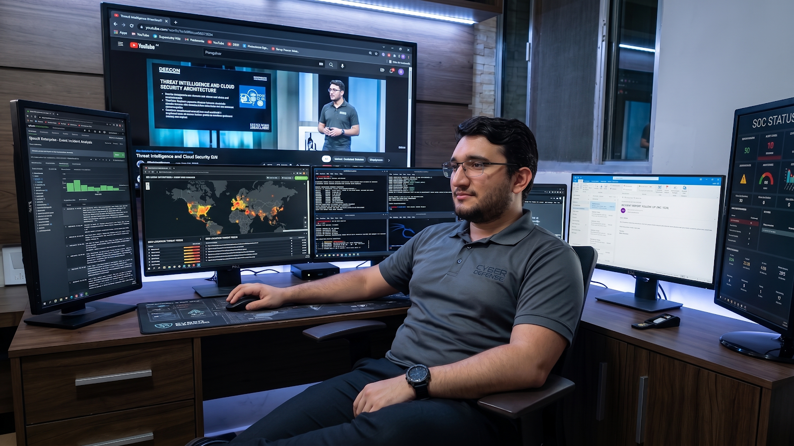
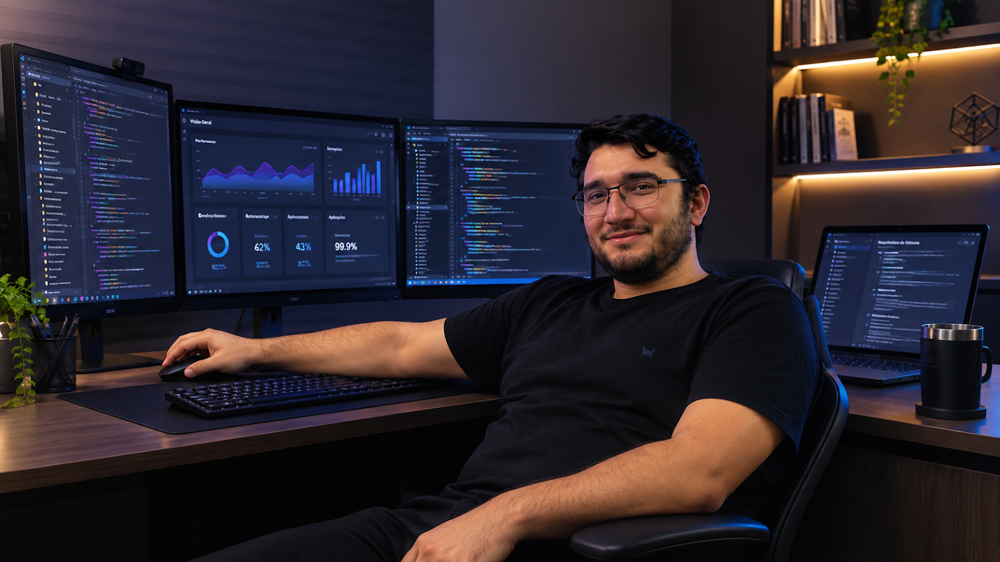
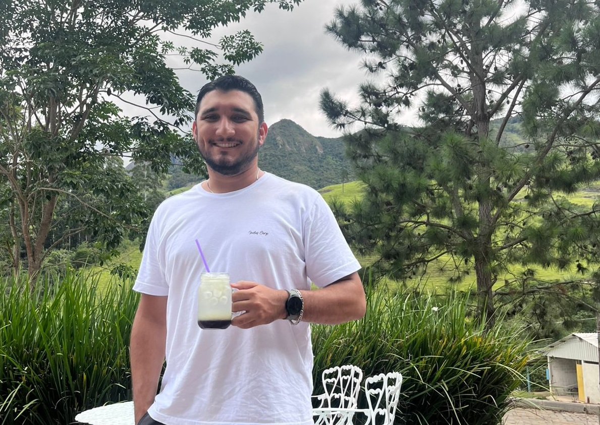

CYBERSECURITY
Monitoramento de Ameaças em Tempo Real
Operações de segurança, análise de eventos e resposta a incidentes em ambientes críticos.
Ver projetos
Operações de segurança, análise de eventos e resposta a incidentes em ambientes críticos.
Ver projetosAnálise de vulnerabilidades, hardening e melhoria contínua da postura de segurança.
Ver projetos
Redes, infraestrutura, SIEM, EDR, WAF e microssegmentação aplicados à proteção de ambientes corporativos.
Conhecer experiência
Analista de Segurança da Informação com mais de 5 anos de experiência em redes, infraestrutura e cibersegurança em ambientes críticos corporativos e MSSP. Graduando em Engenharia da Computação (FAESA), com atuação em operações de SOC, resposta a incidentes e mitigação de ameaças.
Experiência com administração de soluções multi-vendor, WAF, EDR, SIEM, troubleshooting avançado de redes, análise de logs, controles de segurança, riscos, conformidade, ISO 27001/27002 e LGPD.
Uma visão rápida da experiência e dos projetos apresentados no portfólio.
ISH Tecnologia · Ambiente SEFAZ
Segurança de aplicações, infraestrutura e serviços; monitoramento de APIs, servidores e ambientes containerizados; investigação e resposta a incidentes; microssegmentação com Illumio; Check Point; análises com Acunetix, Burp Suite e Postman; aplicação de boas práticas OWASP.
Scanner customizado para identificação de ameaças web, com interface gráfica e dashboard para visualização das métricas e alertas de segurança.